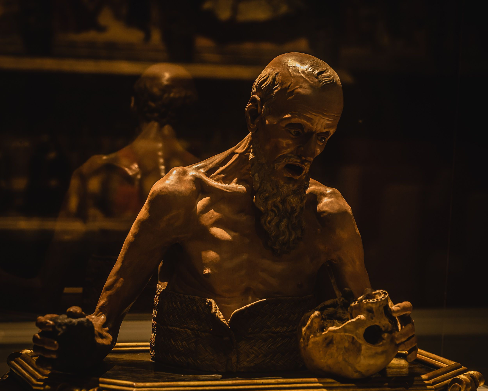
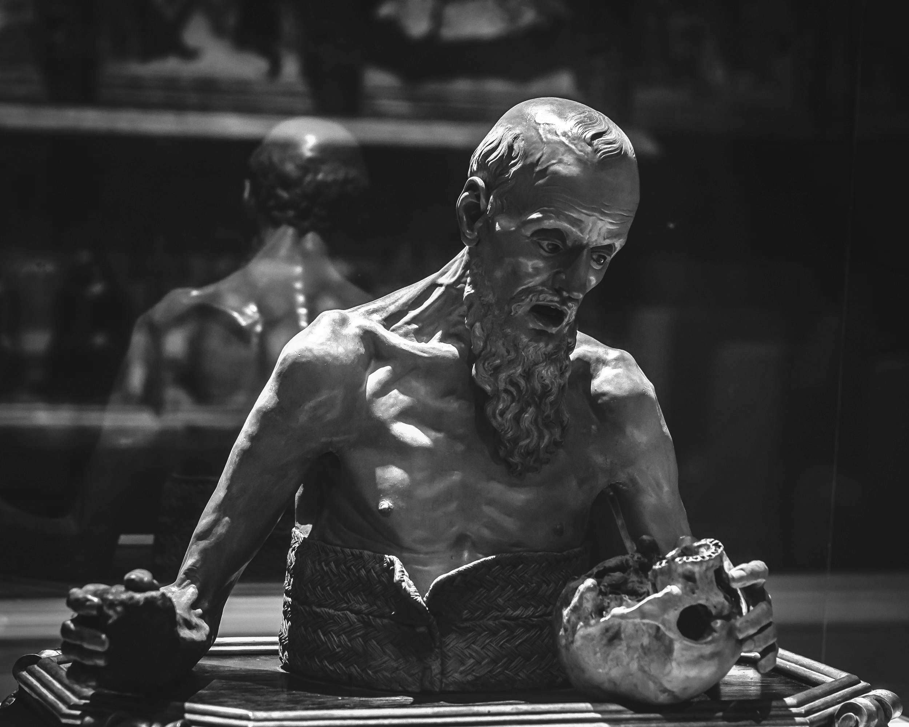

I will endeavor to explain this as simply as possible. And it does beg explanation as it is the greatest thing in all movies. Have you ever seen Point Break and wanted more? And then you’ve turned on Heat and said, “I can’t possibly be done.” Well, this is the site for you. I am here to break down that dynamic you’re so in love with, the one that engages your heart and your mind. I’m talking about when two incredibly similar people find themselves on opposite sides of a war and the only thing keeping them there is One Irreconcilable Difference. Sometimes the difference will be reconciled. Most of the time as in the magnum opuses of this trope Heat and Point Break, the inventors if one dares, they will not. Below is a list of the four I'd like to speak about today that have made the list. I've also included a few honorable mentions to stimulate thought.
The site’s namesake. To me, this is so obvious that I don’t even have much to say about it. The entirety of the 3-season series is dedicated to the push and pull between Hannibal and Will being the same person – darkly minded, antisocial, vindictive - who want the same thing – to kill unabashedly and make a show out of it. Combine this with the canon homoerotic relationship between these two and you’ve got yourself ‘two people, one irreconcilable difference’ with a bow on it. The only thing that would make it more perfect is if when they fell off the cliff in the end, that was the end, ala Heat or Sherlock Holmes: Game of Shadows (another tentative add). Typically, I do reserve these spots for if someone wins the game or if they both lose. But given the fact that I’ve also allowed Twinless and Wicked on this list, I think we’ll have to leave the spoils to the victor.
Hannibal, for your viewing pleasure.I may have named this page The Red Dragon but that’s just because I love Hannibal. This movie right here is the actual main control for the concept of “two people, one irreconcilable difference”. A good way to know if you are watching that kind of film is if you get perfect lines like: “I want you by my side.” or “We want the same thing” followed by a response like “My friend, I’m sorry but we do not.” We. Do. Not. It’s simply the entire idea. Aside from this being a generally fantastic action film from start to finish as well as one of the best superhero films ever made, it is the best example of how to write two people who have the same goal in life, almost all the same beliefs, except for one that throws contention into their entire relationship. The death of Kevin Bacon in the finale really proves this movies expert understanding of what they were doing. Was it not entirely brilliant to have Erik physically block out Charles voice as he’s also likely blocking out the subconscious Charles voice in his head? Was it, again, not inspired to have Charles feel tangible pain by Erik going against his beliefs as the coin drove through Kevin Bacon’s head? The entire sequence on the beach is just different symbolic pains Erik inflicts on Charles by choosing not to follow his beliefs and therefore leaving him. For all that it had to do as a superhero film, it still managed in my humble opinion to include a fantastic study of the complexity of activism when boiled down to the individual. The look of disgust on Erik’s face when the tiny hope he has of Charles seeing the light dies and the way he drops him right back into the arms of the US government (Moira) that he loves so much. I could go on forever but alas watch this film and then Judas and the Black Messiah (don’t actually know if this is a valid recommendation, haven’t seen it in years).

“I’m going to take. His. Face. Off” This one is a bit harder to argue but I will try. The core of this movie, beyond identity, is obviously vengeance and the pursual of vengeance. Nic Cage’s villain is a lover of chaos because it always begins some sort of chase and this natural flows into the joy he gets out of getting revenge for losing his face. To an extent there’s also a love of how his actions can control others – his brother, his lover, John Travolta’s family and eventually John Travolta himself. In fact, he begins to enjoy the chase because he realizes he can have complete control over not just John Travolta’s life when he gains his face, but over the actions he takes to get it back. Similarly, John Travolta is driven to extremes by revenge. While he didn’t throw the first stone by taking Nic Cage’s face off (Nic Cage did that by killing his son, of course), he did go beyond any sort of expected code as an FBI agent in doing so, setting him on a course to become just as low as the villain he was chasing. And setting him on a course to revel in the downfall of the villain. Should they have been even when Nic Cage lost his brother? Could they have ever been even? They might be wearing each other’s faces but they really weren’t such different men. Maybe this one you just have to watch to understand.
This is also a tentative add. One major reason that I’m unsure of if it counts is because it’s really not homoerotic enough (which is something I never expected to say about a Nolan film). Though that’s not the defining factor of the trope, it does make it easier for the characters to tend to a “I need you by my side” sort of perspective. Fundamentally, what makes it this kinda of story is if, like in Heat, Hedda, or Hannibal, there is a moment of realization from both characters that they are the same person, but there is one thing they just cannot relate on. Of course. Oh, but The Prestige does have that. At the very end, as Hugh Jackman lies dying, he says, “You never understood why we did this”. They were both magicians, they both – like FaceOff – became obsessed with the pursuit of revenge but Hugh was a showman (the greatest perhaps) and Bale was not. Is this not their one difference? Well, I’m not so sure. One wonders if Bale was not also a showman, just not a very natural one, because he could’ve easily been an ingenue like his brother character. One wonders how much this trope is muddied due to Bale being two people and not one.
The reason this is a tentative add is because I’m not altogether sure they ever wanted the same thing. Similar to The Social Network, I suppose, they are just two people who care about each other enormously but their biggest wants end up tearing them apart. However, in most of these cases, one can find the biggest wants of our main characters tearing them apart. In fact, that’s often the entire idea. And one is quick to say that Glinda and Elphaba are different people because one begins quiet and the other begins loud and popular but putting how their experiences have effected their personalities aside, are they really so different? Don’t they both just want to be noticed? Don’t they both just want to do some good? Aren’t they both deep down caring, thoughtful, loving people? And of course there’s the homoeroticism that always makes me feel like this is a must add. I haven’t seen this in a while so I don’t have any direct quotes but I do think the entirety of Defying Gravity is this trope. “Limited. Together, we’re unlimited.” “Dreams the way we planned them, if we work in tandem.” And just as soon as they start harmonizing do they break apart. “I hope you’re happy, now that you’re choosing this.” Wait, this is such an obvious add!
Impeccable. Every time a guy is put against Jesse Eisenberg, I will be there, notebook in hand. This, however, is also a tentative add because even though we do get “I need you” and “I can’t do this without you”, something is missing here. It’s like how technically Indiana Jones is a fantasy but it makes more sense when classified as an action adventure. Perhaps it’s because Eduardo and Mark begin wanting something different very early in the film, to the point where one wonders if they ever wanted the same thing at all. If they did have a similar want, it would certainly be either to be needed or to be loved. Loneliness is at the core of this film. But they aren’t similar people in their loneliness. Eduardo clings to those that aren’t good for him while Mark distances himself from the friends he already has before they can realize how different he feels from them. He is constantly thinking that maybe it’s the place he’s at – wherever he grew up, Harvard – that isn’t right for him, surely there are better people with which he belongs but there simply aren’t. This is more of “two people who mean a lot to each other but want something so different it tears them apart”. Which has a lot of crossover with the trope but isn’t exactly right, right?
/*yo yo yo its spooky island!!*/